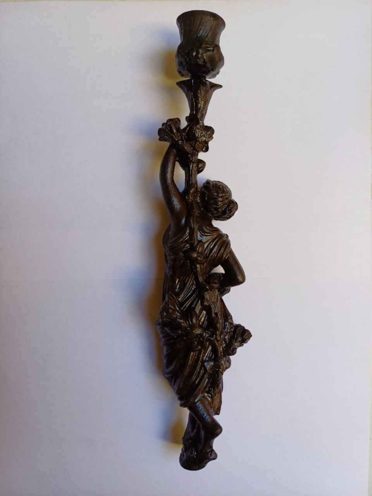
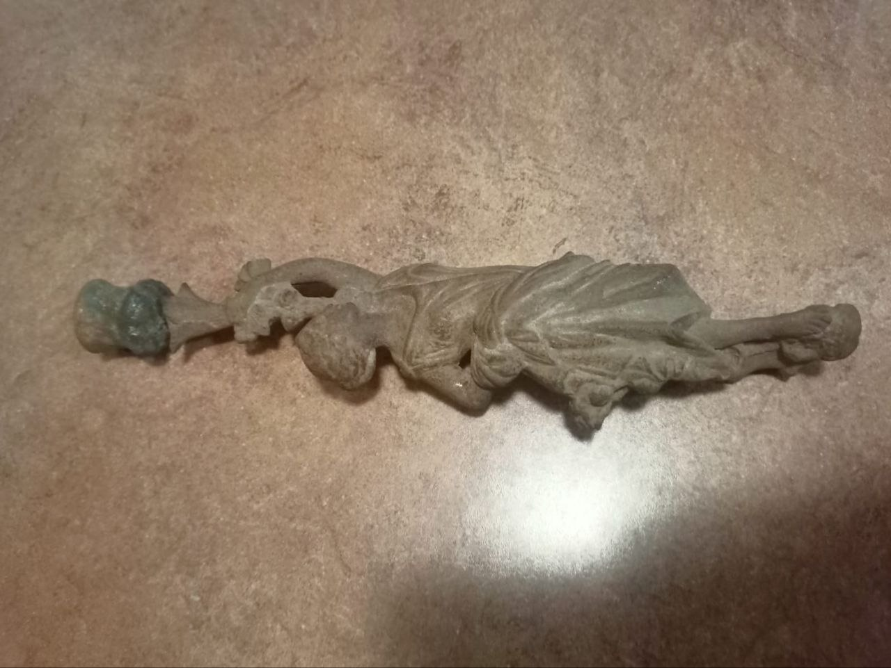
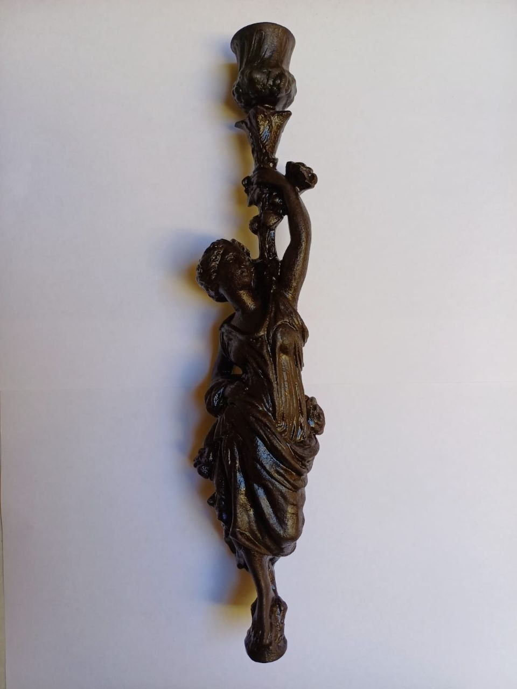
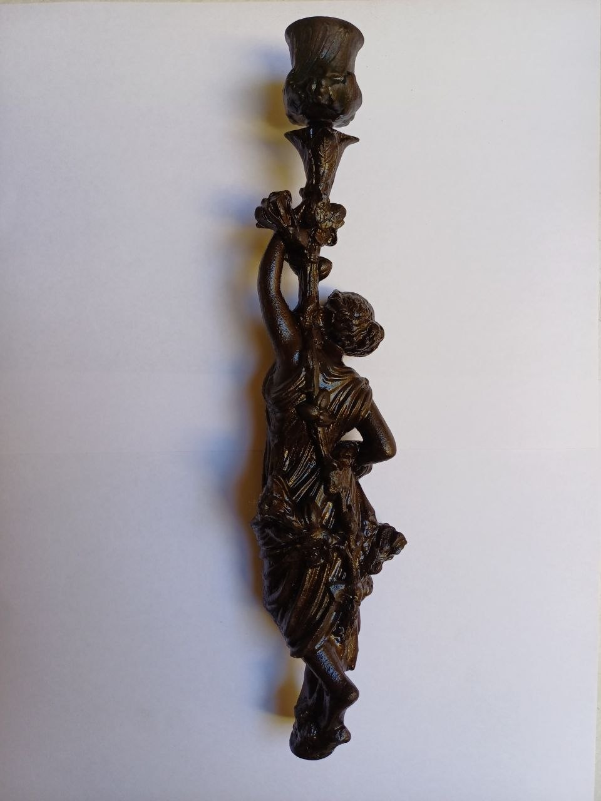
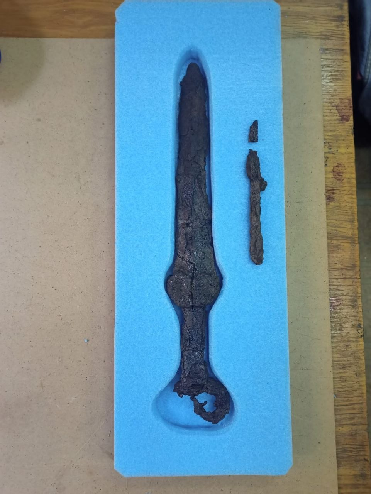
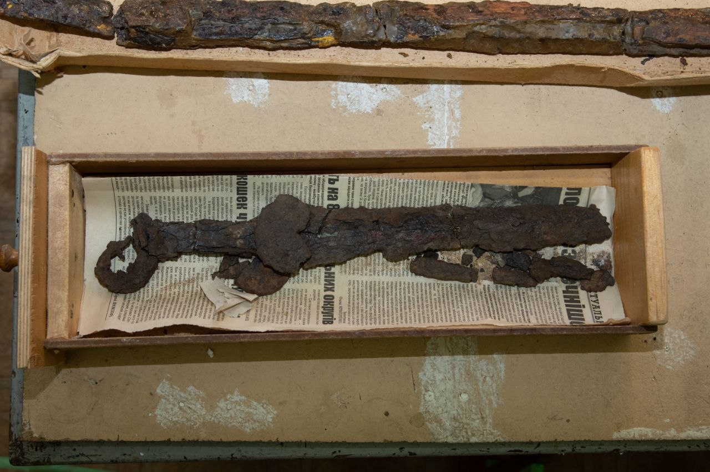
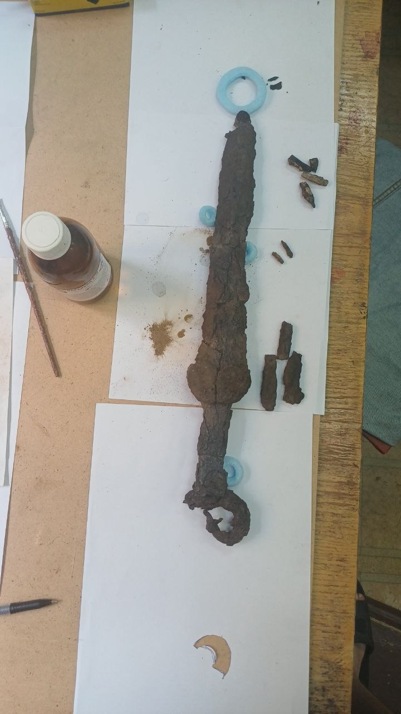

// Роботи_та_Артефакти
Фотографії артефактів з музейних фондів та наукових досліджень. Натисніть на фото для перегляду.

Артефакт 1 (текст, замінити)

Артефакт 2 (текст, замінити)
Артефакт 3 (текст, замінити)

Артефакт 4 (текст, замінити)

Артефакт 5 (текст, замінити)

Артефакт 6 (текст, замінити)
Артефакт 7 (текст, замінити)

Артефакт 8 (текст, замінити)

Артефакт 9 (текст, замінити)

Артефакт 10 (текст, замінити)